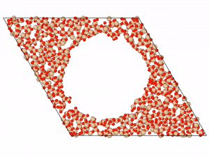
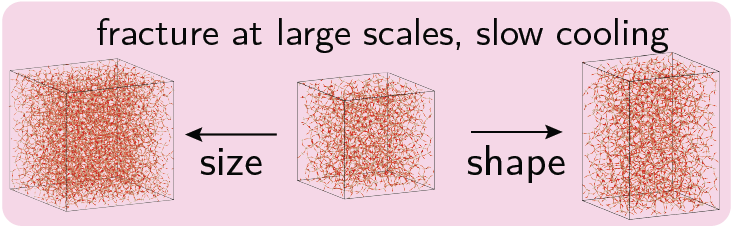
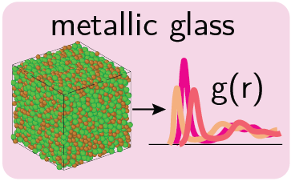
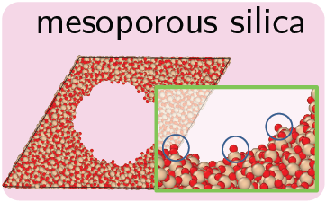
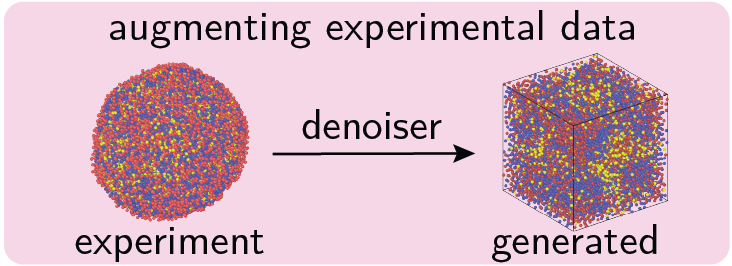
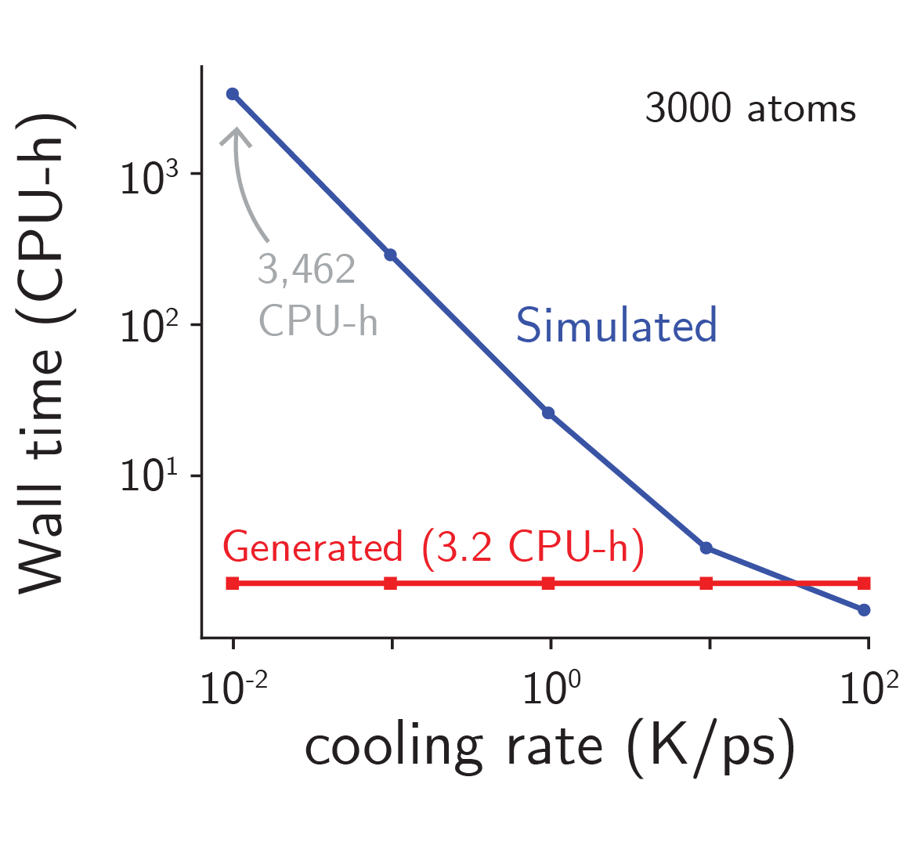

Easy, fast and accurate
generations of atomic structures
for disordered materials

Generation of a-SiO2

Generation of a-SiO2

Generation of mesoporous a-SiO2
Introduction
Generative models show ample promise for materials design, but face severe limitations in the amorphous materials space due to their complex structures. Traditional approaches struggle to capture the intricate, non-periodic arrangements that characterize disordered materials, creating a significant gap in computational materials science.
To address this challenge, we developed DM2, a denoising diffusion framework that generates reliable atomistic structures across diverse amorphous systems and processing conditions. Our approach outperforms classical simulations by up to 1000 times, representing a dramatic leap in computational efficiency while maintaining structural accuracy.
With DM2, we enable a range of applications in amorphous materials research, including performing fracture simulations with large, slow-cooled structures, generating mesoporous structures, and augmenting experimental datasets with synthetic data. These capabilities open new avenues for understanding and designing complex disordered materials.
This work provides a comprehensive roadmap on how to use, validate, and develop generative models for amorphous materials. Our framework represents a significant step toward bridging the gap between computational efficiency and structural fidelity in materials science, paving the way for accelerated discovery and design of disordered materials with tailored properties.
Framework
DM2 employs a sophisticated denoiser model trained to predict the displacement added to amorphous structures during the diffusion process. During training, displacements ε are sampled from Gaussian distributions and systematically added to the training structures, enabling the model to learn the underlying structural patterns of disordered materials. Structure-level labels such as cooling rates are seamlessly embedded into the training set using a Gaussian basis set, allowing the model to condition generation on specific processing parameters. To generate new structures, the model is provided with a random input structure and a target cooling rate. The structure is then denoised over multiple time steps following a carefully designed noise schedule similar to the denoising diffusion probabilistic model (DDPM) framework, progressively refining the atomic positions to produce physically realistic amorphous structures.
DM2 Framework Overview: Our denoising diffusion approach for generating amorphous structures, showing the training process with Gaussian noise addition and the iterative denoising procedure for structure generation.
Quick Generation
Available Models
| Model Name | System | Conditional | Condition Type | Cutoff | Training Data | Contributor | Download |
|---|---|---|---|---|---|---|---|
| gen-a-sio2-v1 | a-SiO2 | No | N/A | 5 Å | 6×3000 atoms from MD | Kai Yang | ⬇️(UNDER CONSTRUCTION) |
| gen-a-sio2-cond-v1 | a-SiO2 | Yes | Cooling rate | 5 Å | 24×3000 atoms from MD | Kai Yang | ⬇️(UNDER CONSTRUCTION) |
| gen-cu50zr50-v1 | Cu50Zr50 | No | N/A | 5 Å | 2×5000 atoms (here) | Kai Yang | ⬇️(UNDER CONSTRUCTION) |
Validation
Pair Distribution Function Validation
Our denoising diffusion model successfully reproduces the pair distribution function g(r) characteristics of amorphous materials. The generated structures show excellent agreement with experimental and molecular dynamics reference data, capturing both short-range and medium-range structural ordering essential for realistic material properties.
Application




Application Title
description: 'The computational cost of simulating a-SiO2 within the melt-quench process drastically increases with lower cooling rate, whereas the generative model has constant inference time. At very low cooling rates (10−2 K/ps), the difference in computational wall time can reach 3 orders of magnitude.'
BibTeX
@article{yang2025generative,
title ={A Generative Diffusion Model for Amorphous Materials},
author ={Yang, Kai and Schwalbe-Koda, Daniel},
journal ={arXiv preprint arXiv:2507.05024},
year ={2025}
}